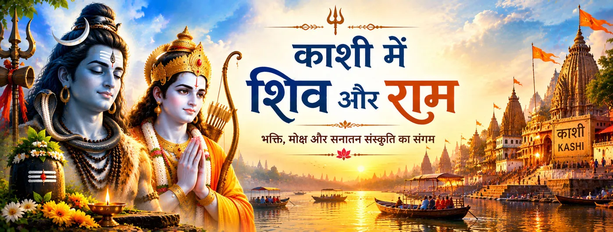

काशी के नाथ शिव
काशी की परंपरा शिव को विश्वनाथ के रूप में केंद्र में रखती है। इसी शैव वातावरण में राम-नाम का स्मरण भी पवित्र अर्थ ग्रहण करता है।

जीवित परंपरा
काशी वह पवित्र भूमि है जहाँ शिव-भक्ति और राम-नाम का सुंदर संगम दिखाई देता है। रामचरितमानस शिव को राम-नाम का निरंतर जप करने वाला बताता है और काशी में नाम के उपदेश को मुक्ति से जोड़ता है।
इसलिए राम–शिव परंपरा में काशी केवल शिव-आराधना की भूमि नहीं, बल्कि स्मरण, तीर्थयात्रा और राम-भक्ति की जीवित भूमि भी बन जाती है।
चार पवित्र संबंध
काशी की परंपरा शिव को विश्वनाथ के रूप में केंद्र में रखती है। इसी शैव वातावरण में राम-नाम का स्मरण भी पवित्र अर्थ ग्रहण करता है।
रामचरितमानस शिव को राम-नाम का निरंतर जप करने वाला बताता है, जिससे नाम-स्मरण दोनों परंपराओं के इस संगम में केंद्रीय हो जाता है।
मानस काशी में शिव द्वारा राम-नाम के उपदेश को दुःख से मुक्ति और संसार-सागर से पार होने की आध्यात्मिक धारणा से जोड़ता है। यह उस ग्रंथ की व्यक्त की गई धार्मिक शिक्षा है।
काशी आज भी शिव-आराधना पर केंद्रित जीवित तीर्थनगरी है। राम–शिव भक्ति में यही जीवित पवित्र भूमि राम-नाम की स्मृति को भी धारण करती है।
ग्रंथीय संदर्भ
बालकाण्ड 11 में रामचरितमानस राम-नाम को महान मंत्र कहता है और बताता है कि महेश अर्थात् शिव उसका जप करते हैं। इसी प्रसंग में काशी में शिव द्वारा नाम के उपदेश को मुक्ति से जोड़ा गया है।
बालकाण्ड 15 में भी शिव को राम-नाम का निरंतर जप करने वाला और काशी में राम-नाम का उपदेश देने वाला बताया गया है। बालकाण्ड 28 में शिव पार्वती से राम के विषय में गहन भक्तिपरक और आध्यात्मिक वचन कहते हैं।
जीवित भक्ति
शिव और राम-नाम का संगम भक्त को स्मरण को ही एक आध्यात्मिक साधना के रूप में देखने का अवसर देता है।
काशी ऐसी भक्तिपरक छवि देती है जिसमें शिव-आराधना और राम-नाम साथ रह सकते हैं, बिना भक्ति को प्रतिस्पर्धा बनाए।
शिव का राम-नाम स्मरण भक्त का ध्यान विनय, भक्ति और एकाग्र आध्यात्मिक स्मरण की ओर ले जाता है।
मंदिर-पूजा, पवित्र कथाएँ, स्मरण और तीर्थयात्रा काशी में राम–शिव परंपरा की अनेक धाराओं को एक साथ लाती हैं।
एक शांत चिंतन
काशी के नाथ शिव द्वारा राम-नाम के स्मरण की छवि एक सुंदर चिंतन देती है: ईश्वर के प्रति प्रेम रूपों की सीमाओं को पार कर सकता है, फिर भी श्रद्धा में स्थिर रह सकता है।
भक्तों के सामान्य प्रश्न
रामचरितमानस राम-नाम के जप और उपदेश को काशी से जोड़ता है, विशेषकर नाम-महिमा और मुक्ति के प्रसंग में।
हाँ। रामचरितमानस स्पष्ट रूप से शिव को राम-नाम का निरंतर जप करने वाला बताता है। यह उस ग्रंथ के भीतर का भक्तिपरक और आध्यात्मिक कथन है।
यह एक महान शैव तीर्थभूमि को राम-नाम के स्मरण के साथ जोड़ती है, जिससे दोनों भक्ति-धाराओं का समन्वय विशेष रूप से स्पष्ट दिखाई देता है।
हाँ। बालकाण्ड के प्रसंग शिव द्वारा राम-नाम के जप और काशी में नाम के उपदेश का वर्णन करते हैं, जबकि अन्य प्रसंगों में शिव राम के विषय में गहन भक्तिपरक वचन कहते हैं।